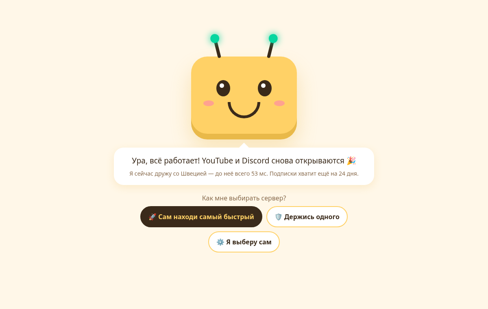
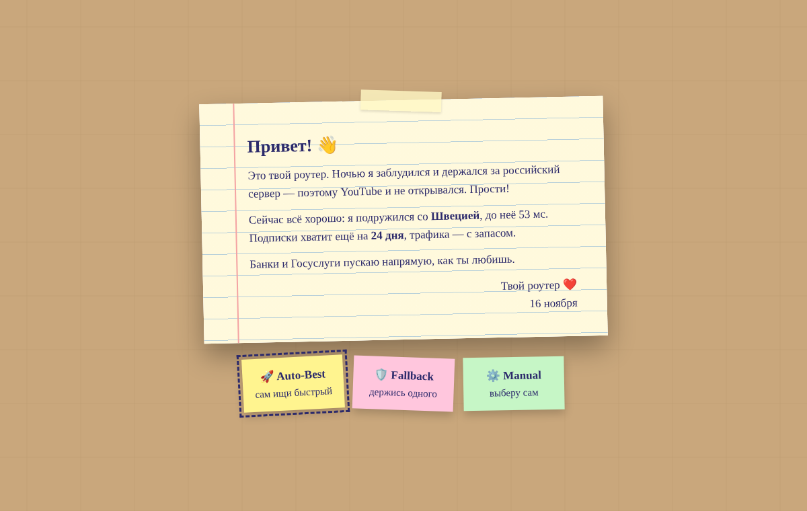
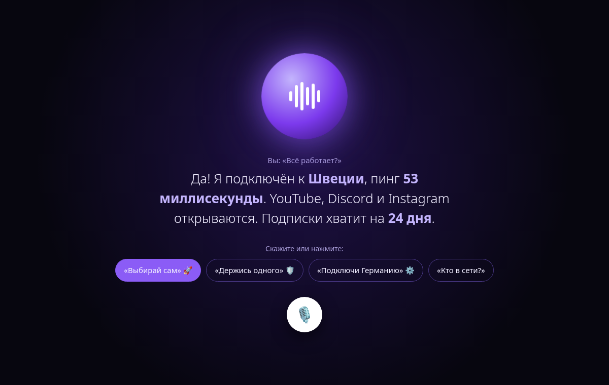
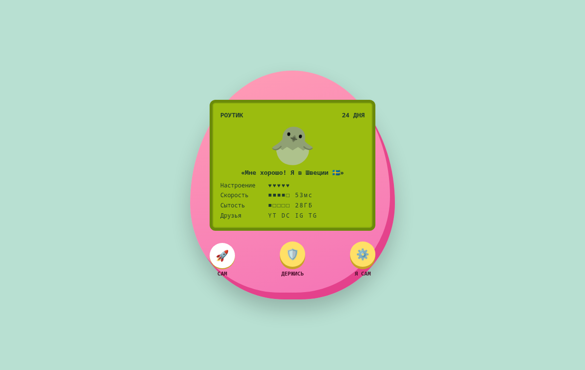
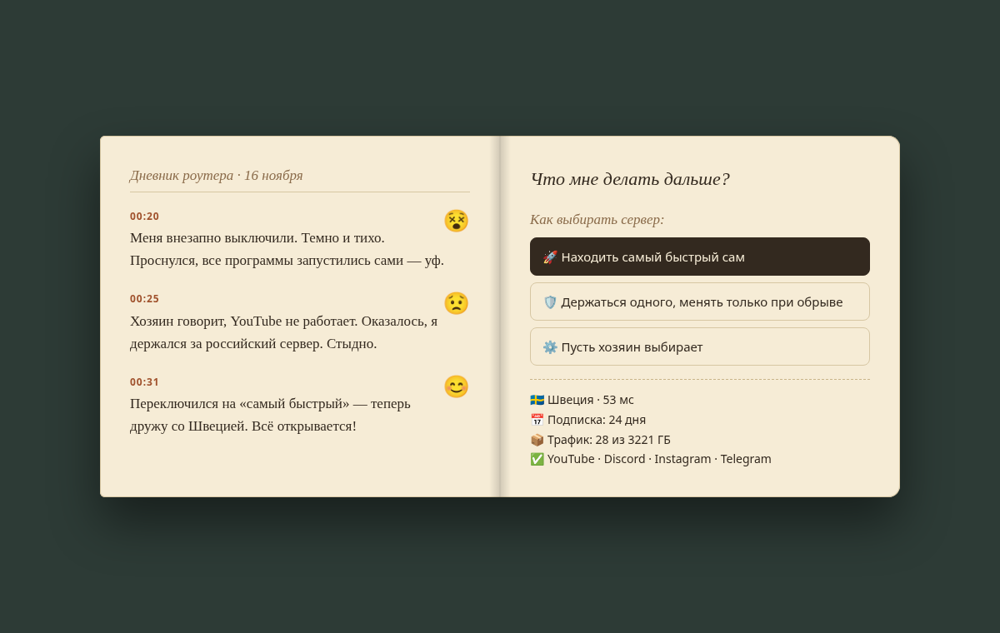
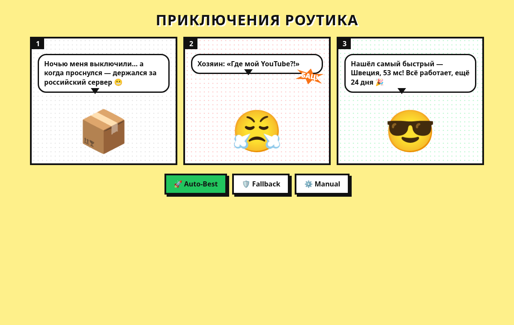
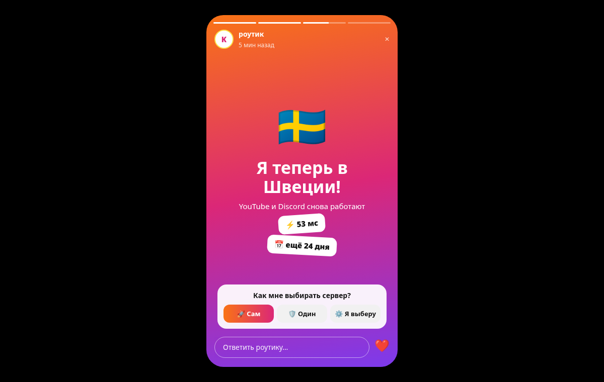
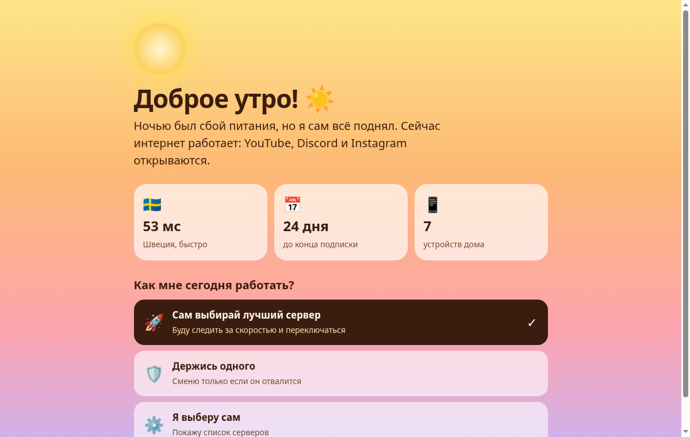
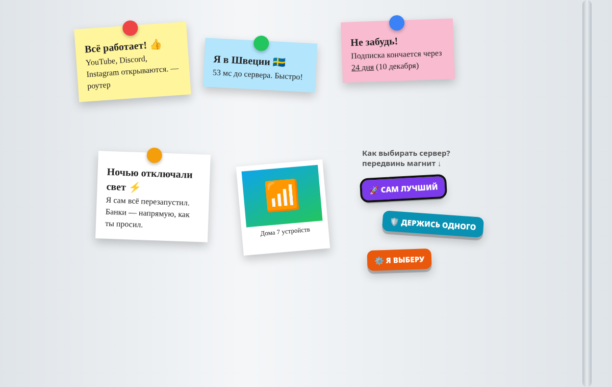
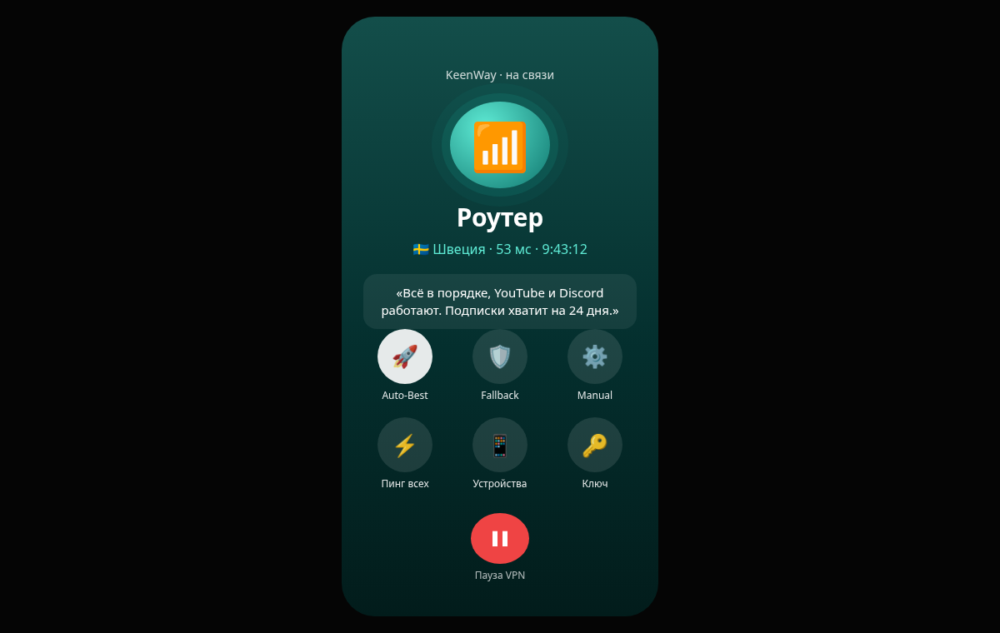

KeenWay — 10 очеловеченных дизайнов

1. Мордочка
Роутер с лицом и антеннами говорит в облачке, режимы — ответы ему.

2. Записка
Письмо от роутера на тетрадном листе, режимы — цветные стикеры.

3. Голосовой помощник
Светящийся шар говорит с тобой, режимы — фразы «Выбирай сам».

4. Питомец
Тамагочи «Роутик»: настроение, скорость, сытость, три кнопки.

5. Дневник
Роутер пишет, как прошла ночь, справа спрашивает, что делать дальше.

6. Комикс
«Приключения Роутика» в трёх кадрах.

7. Сторис
Роутер выложил сторис, режимы — опрос внутри.

8. Доброе утро
Приветствие с солнцем, «Как мне сегодня работать?».

9. Холодильник
Записки на магнитах, режим — передвинь магнит.

10. Роутер на связи
Экран звонка: режимы и действия — кнопки вызова.